[Impacts of Street Built Environment on Crime Occurrences from An Active Transportation Perspective: A Case Study of San Francisco]
Key Words: Urban Crime; Active Transportation; Street View; Machine Learning
[FULL ARTICLE] Available Soon!
This post might come from a pre-copy-editing or a post-print author produced file of an article accepted for publication. For the efinitive publisher-authenticated version, please refer to the full article link.
Highlights
Through collecting multi-source urban data and applying ML algorithms, we have explored the relationship between block-level crime occurrences and active transportation (AT) factors in San Francisco.
Background
Street environments have been linked to crime, but the relationship between the infrastructure of active transportation (human-powered forms of travel such as walking and cycling) and crime is not well understood.
Research Aim
To address the research gap found in previous studies (Fig. 1), the main aim of this study is to discuss the impacts of both eye-level and non-eye-level street attributes on crime occurrences from the perspective of active transportation.
Methodology
We adopt a two-step crime modeling process: 1. Collecting the geospatial data of crime reports, demographics, urban functions, non-eye-level AT variables, and GSVIs which are further processed into eye-level AT variables using DL algorithms. 2. Revealing the magnitude and spatial heterogeneity of the associations between crime occurrences and explanatory variables using multivariate OLS and GWR regressions. The research framework is as Fig. 2.
Data
We collect and aggregate crime report data, demographic data, urban function data, AT non-eye-level data (the physical measurements and proximity level of AT infrastructures such as sidewalks, street benches, bike lanes, and bike-sharing docks), and AT eye-level data (machine-detected GSVI indexes).
Crime Reports
The dataset of crime reports is extracted from the police department incident reports (2018.01-2023.01) obtained from DataSF. We gather 559863 geo-located crime items parsed in 8 main categories and 22 subcategories (Fig. 3). Some visualizations of the crime data are shown in Fig. 4.
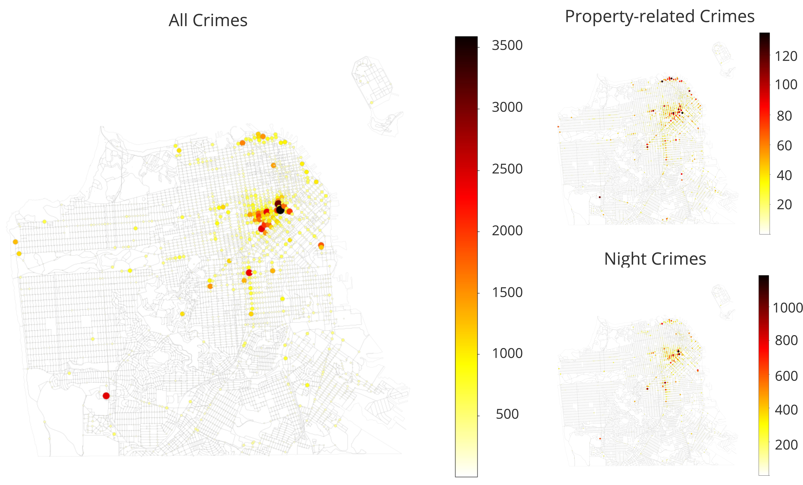
Demographics
To acquire demographics data, we utilize Census APIs to collect the 2020 Decimal Census data for block-level demographics including population, racial composition, and vacancy and block-group-level data from the 2020 American Community Survey 5-year dataset for metrics including median age and median income. Demographic factors are included in Fig. 5 and some visualizations are shown in Fig. 6.
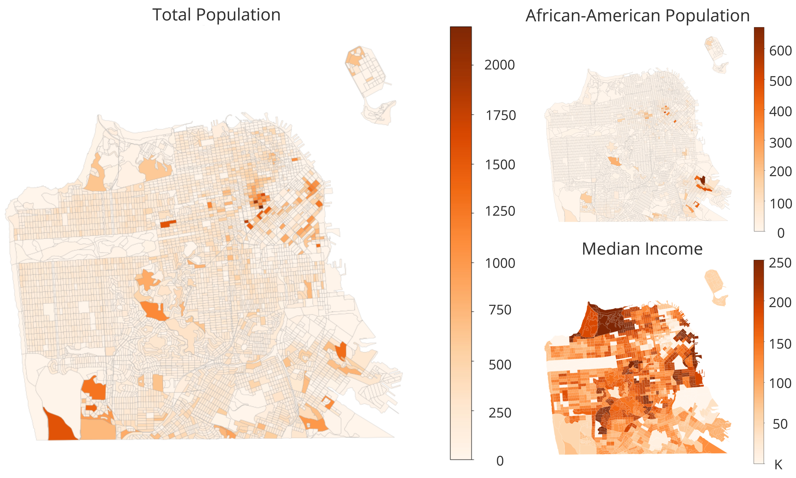
Urban Functions
To collect the data on urban functions, we utilized OSMnx to acquire the amenity point data in San Francisco. Urban Function factors are included in Fig. 7 and some visualizations are shown in Fig. 8.
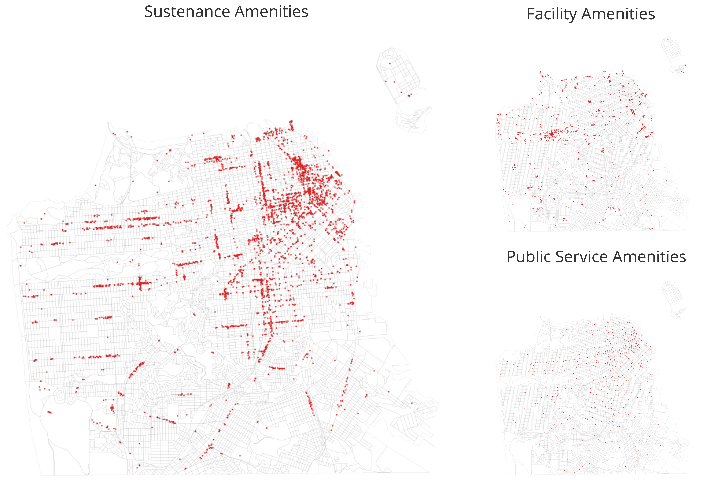
AT Non-eye-level Attributes
Considering the research goal, we set our scope of AT non-eye-level factors as Fig. 9 after a thorough investigation of existing studies as well as data availability. This scheme is developed based on both line and point attributes of street built environment. For line features, factors are selected to describe the physical characteristics of linear AT infrastructures such as sidewalks and bike lanes. For point features, attributes are chosen to measure walking- or biking-related facilities such as street furniture and biking docks. Some visualizations of AT non-eye-level attributes are shown in Fig. 10.

AT Eye-level Attributes
Built upon previous literature and the research aim, the curation of AT eye-level dataset relied on Google street view images (GSVIs) and DL-based algorithms. To reduce the cost while maximizing the potential of data, we sampled GSVIs every 50 meters along the center lines of all the active street segments of San Francisco in ArcGIS, and the camera headings are set to 0, 90, 180, and 270 degrees (Fig. 11). Also, to make GSVIs closer to people's perceptions, we set the pitch as 0, the fov as 120 degrees, and the size of 640 * 640 with other settings as default. Finally, we download 109604 valid GSVIs in total.
We then use a pre-trained Pyramid Scene Parsing Network (PSPNet) based on the MIT ADE20K dataset to annotate the images we collected. Our results indicate that about 137 features are detected by the algorithm. Based on our research aim and previous literature, we retained only AT-related street features, aggregated and categorized them into 14 features in three types: natural settings, artificial settings and moving objects. The list of these attributes is as Fig. 12. The spatial visualizations of some features are shown in Fig. 13.

Data Frame Construction
This step aims at combining all the data collected in one data frame for regression modeling.
First, as shown in Fig. 14, we set our analytical unit to the 2020 Decimal Census block plus a 50-m buffer. The benefit of this particular unit is that it could easily aggregate all the data spatially while maintaining high spatial accuracy. 50-m is a small distance for walking or biking and had been used in a lot of studies as the buffer distance of small spatial units. Thus, data aggregated to this unit could very well represent situations in a block's "nearby" zone. To better inform policy, we also delete the units of treasure island, and eventually, 5893 units are left to be processed in later steps.
Second, we use the Spatial Join method in the Shapely Python package to aggregate all of the acquired data into analytical units. To reduce the modifiable unit area problem (MAUP), explanatory variables are transformed based on Fig. 15. Finally, 76 variables of which the majority are transformed. Fig. 16 illustrates the general idea of the aggregation process.
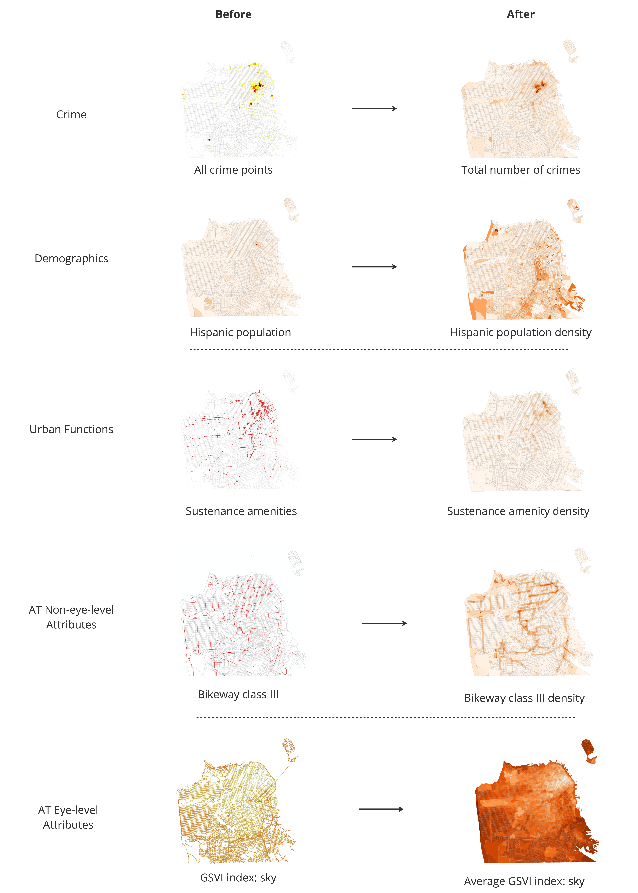
Third, filtering explanatory variables based on their correlations. To improve the accuracy of regression modeling in later steps, we examine the pairwise correlations between the 92 candidates for independent variables from the previous step and eliminate some factors that have larger (> 0.50) correlations with others. Finally, 61 explanatory variables with reasonably small correlations are retained for processing in the following phase (Fig. 17).
Last, normalizing the data. To better compare the coefficients of variables across different regression models, the data from the previous two steps are normalized. The normalization takes place on each dependent and explanatory feature by removing the feature mean and scaling to unit variance. Ultimately, the dataset of 5893 analytical units with 8 normalized dependent variables and 61 normalized independent variables is curated.
Regression Analysis
Based on our literature review and study objectives, we choose multivariate stepwise OLS and GWR as the primary modeling approaches to investigate the impact of independent variables on dependent variables. Since OLS models do not consider the spatial non-stationarity of variables, GWR models are chosen to reduce the bias in the results.
Multivariate OLS regression is used to explore the basic relationships between crime occurrences and explanatory factors. First, we test the strength of the explanatory power of different feature groups in modeling different types of crimes by only using the factors in each group as independent variables (Fig. 18). Then, to better realize the research goal which centers on discussing how AT factors account for crime occurrences, we take demographic and urban function attributes as the baseline model and construct stepwise OLS models with different AT attribute groups. The results of relevant diagnostics are shown in Fig. 19.
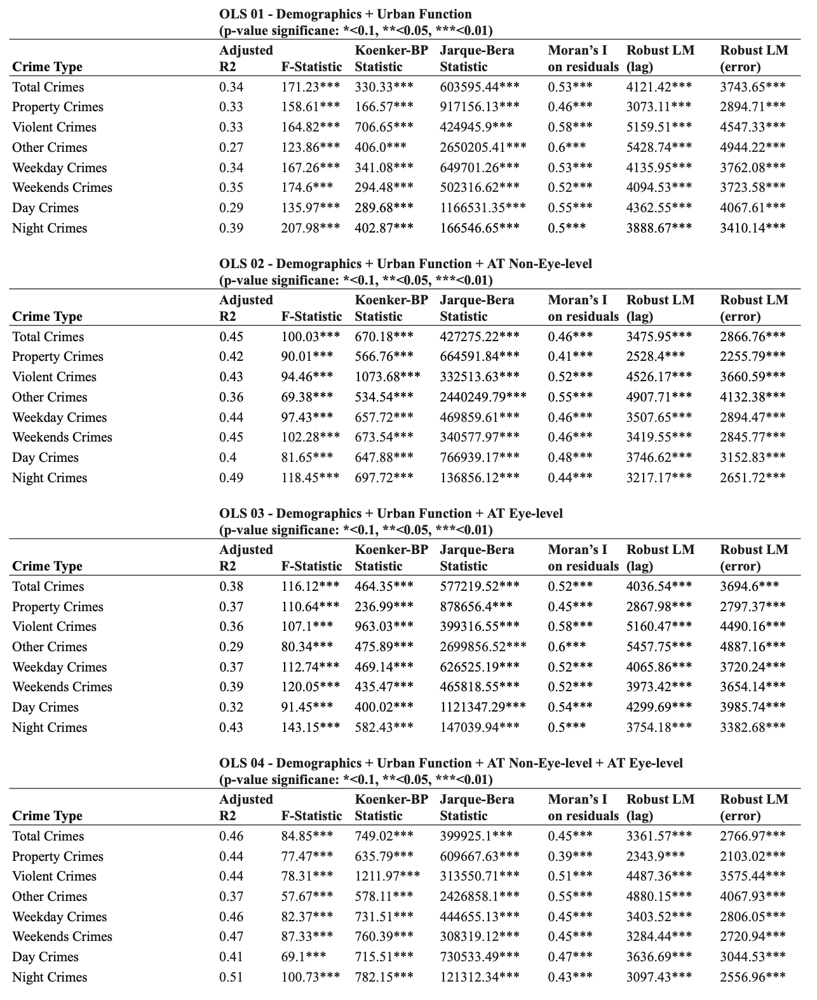
Metrics including adjusted R-squared and F-statistic (Fig. 18) suggest that all four feature groups have significant explanatory power in modeling crime. Also, for some crime types, it could be observed that AT non-eye-level factors could increase the R-squared value by around 0.11 while the value for eye-level factors was about 0.04 (Fig. 19), indicating that AT non-eye-level factors are more powerful in impacting certain crimes. Additionally, significant Koenker-BP Statistic, Moran’s I on residuals, and robust Lagrange multiplier test metrics (Fig. 18 & 19) indicate that spatial dependency and non-stationarity exist in the dataset, making implementing spatial regression models such as GWR necessary.
The advantage of adopting the GWR model is that it could estimate the local coefficients of independent variables for different analytical units, thus promoting the accuracy of results Similar to the OLS modeling, stepwise GWR models are established to determine the impact of AT attributes and help the model selection process in later steps. Fig. 20 demonstrate the diagnosis metrics of four GWR models including adjusted R-squared, AICc, RSS, and bandwidth. From the table, it could be observed that compared with OLS models, GWR models fit the data better by increasing the value of adjusted R-squared significantly while having reasonably low AICc, residual sum of squares (RSS), and bandwidth values.
Results
To simplify our analysis, we take several measures when examining the regression results.
First, we limit our focus to four categories of crime, which include property crimes, violent crimes, day crimes and night crimes.
These four types are selected based on the performance of the OLS and GWR models realted to them to promote a comprehensive discussion about street environments and urban crimes later.
Second, we only consider the results of OLS 04 model and GWR 04 model. These two models, which include all four attribute groups, have reasonably high adjusted R-squared values. The comparison of adjusted R-squared
values among different models is shown in Figure. 21, from which it can be seen that OLS 04 and GWR 04 models hold better performances over other models.
Fig. 22 - Fig. 29 display the regression results.
Third, to further simplify the discussion, we use the OLS 04 model to compare standardized coefficients of variables and only utilize the GWR 04 model to discuss the spatial heterogeneity of variables reflected by
the ranking of the standard deviation of coefficients. The results are visualized in Fig. 30 - 33.
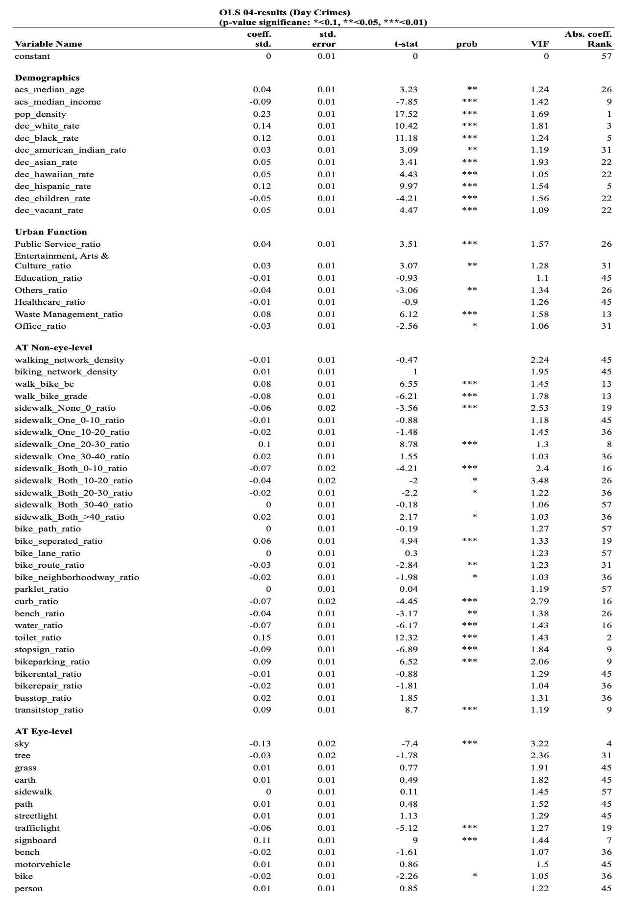
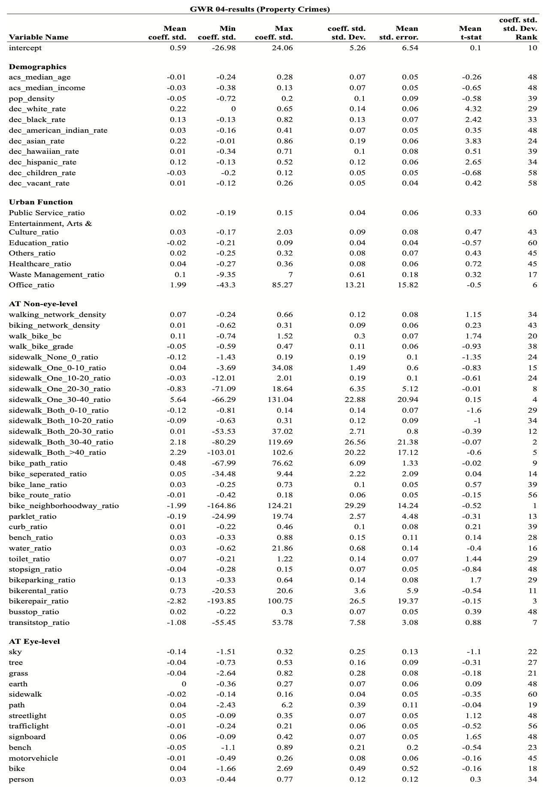

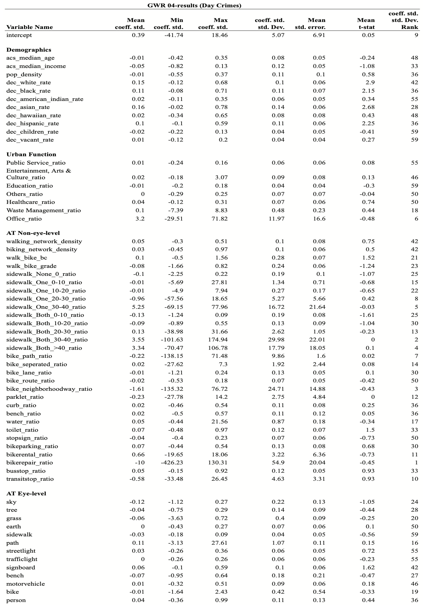
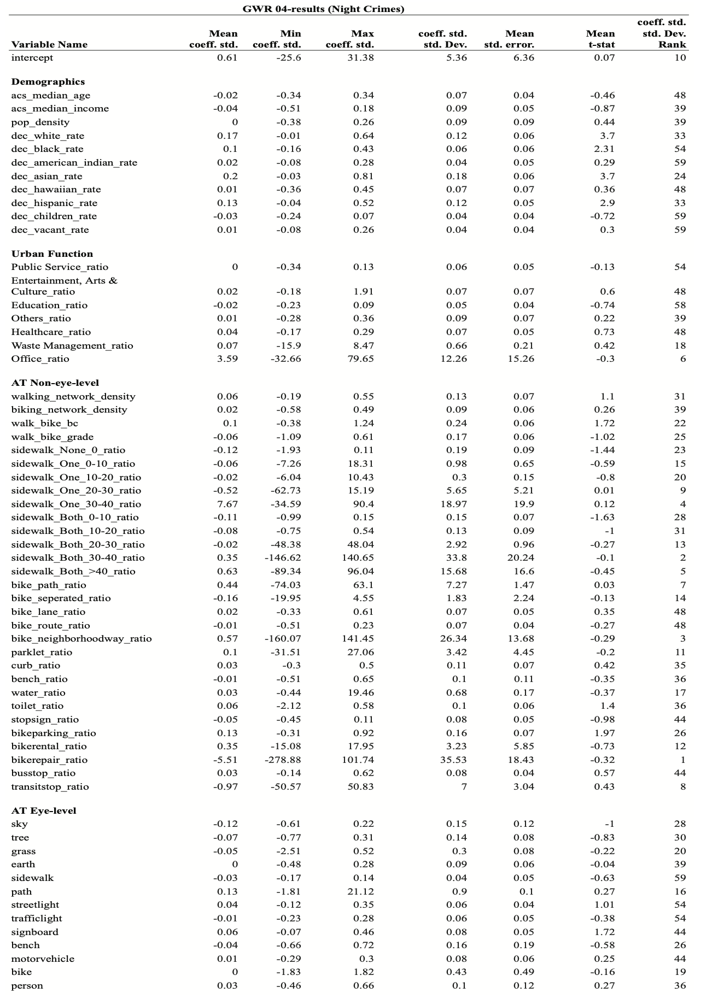
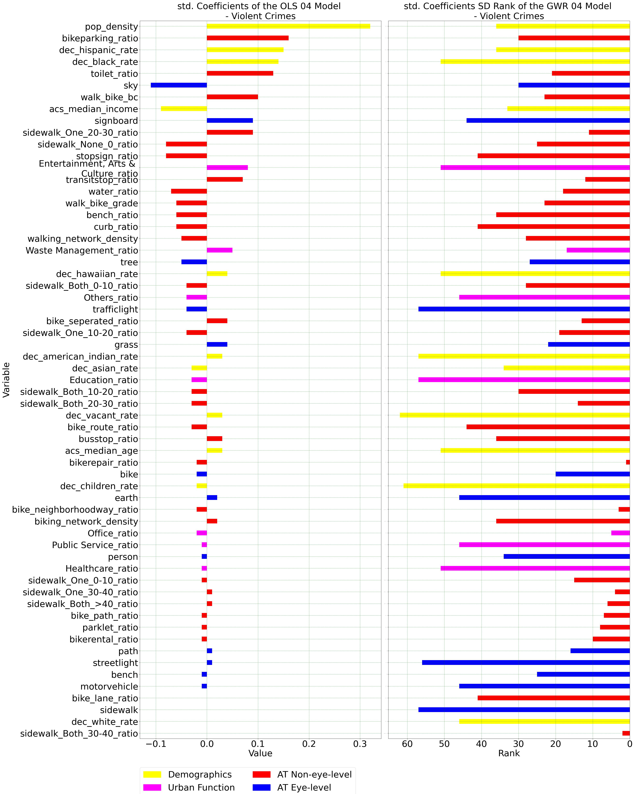
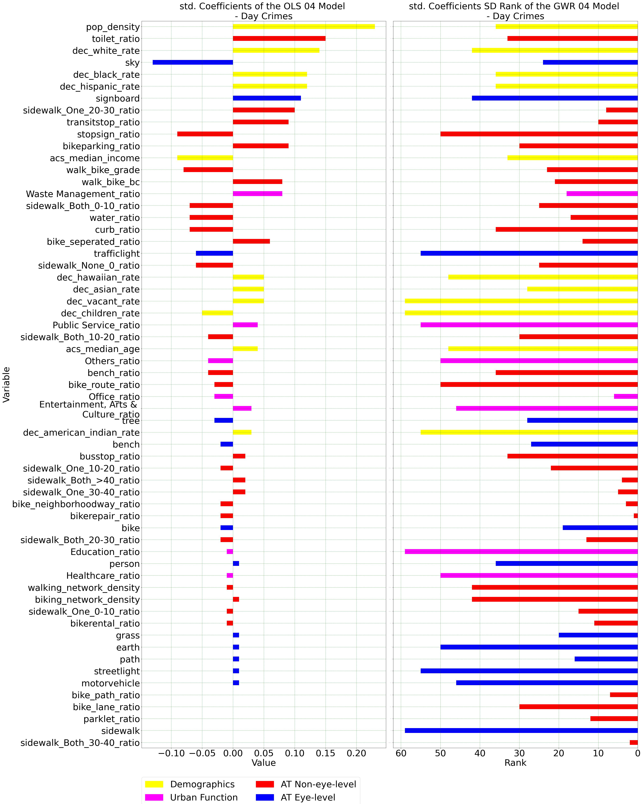

From Fig. 22-25, it could be noticed that a majority of the explanatory variables showed significant (0.1 > p-value) influences on the occurrences of the four crime types.
Also, all variables had VIF values less than 5.0, indicating low collinearity in the model and that the results were comparable.
Moreover, the t-statistics of significant variables were within the acceptable range of greater than 2 or less than -2, confirming that the coefficients of some variables were explainable in rejecting the null hypothesis.
For demographic and urban function factors, from Fig. 22-25 and Fig. 30-33, it could be observed that population density is strongly and positively correlated to violent crimes, day crimes, and night crimes, and a
similar pattern is not shown in property crimes. Other demographic factors such as racial composition also have strong positive correlations with all four crime types.
For AT non-eye-level factors, from Fig. 22-25 and Fig. 30-33, it could be found that facilities including bike parking and toilet have strong, positive impacts on crime occurrences while stop sign has
evident, negative influences on crime incidents. These influences are in similar magnitudes for different crime types.
For AT eye-level factors, the GSVI sky index has a strong and negative impact on crime occurrences while the signboard index has a positive influence on crimes.
Fig. 30-33 indicate that, for most variables with significant coefficients in OLS models, they do not hold the top rankings in GWR models. This suggests that global policies should be considered when applying research
findings to reduce crimes through infrastructure planning, except for specific variables like transit stops and one-side sidewalks measuring 20-30 meters wide.
The spatial distribution of local GWR coefficients for significant OLS variables can be seen in Fig. 34 - 37, while the distribution of local R-squared values of GWR models is shown in Fig. 38.
Fig. 38 highlights the strong explanatory power of GWR models for all four crime types across various neighborhoods, including downtown, the mission district, inner/outer Richmond, inner sunset, lakeshore, and Excelsior.
Fig. 34 - 37 reaffirm that significant OLS variables generally exhibit consistent positive (e.g., toilet and bike parking facility) and negative (e.g., stop sign and GSVI sky index) impacts on crime occurrences throughout San Francisco in GWR results.
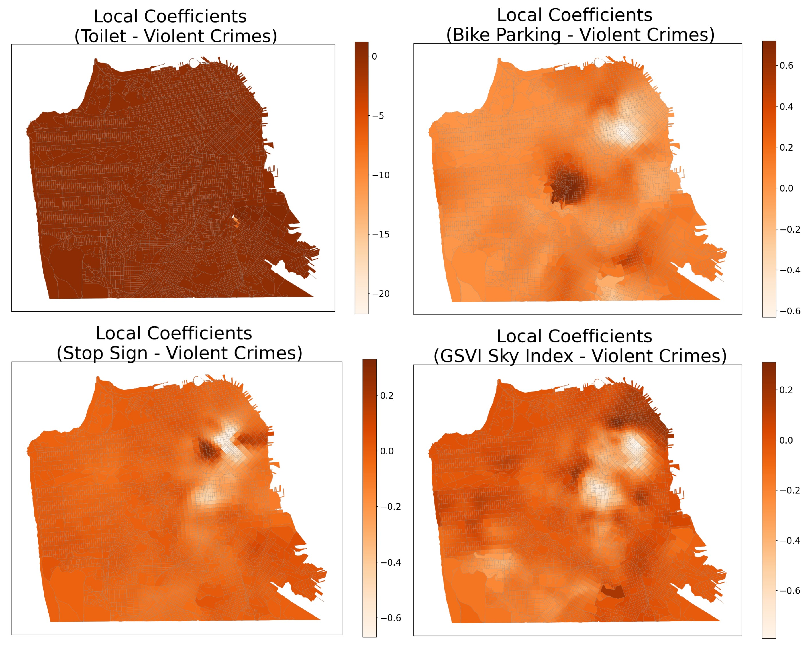
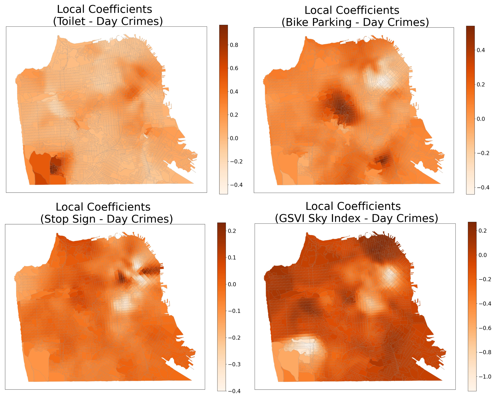
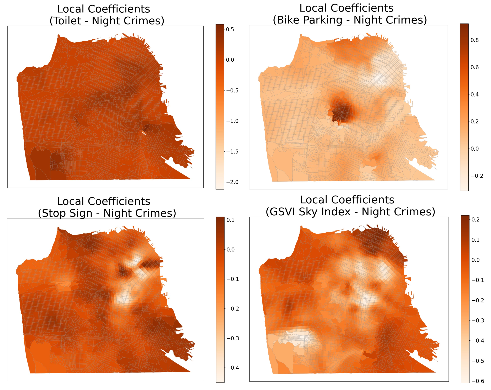
Conclusion
Through collecting multi-source urban data and applying ML algorithms, we have explored the relationship between block-level crime occurrences and the AT factors in San Francisco. Our findings offer valuable insights for developing planning policies that promote pedestrian- and cyclist-friendly environments.
There are significant correlations between crime occurrences and both non-eye-level and eye-level AT factors in San Francisco.
1. Our analysis from the perspective of active transportation revealed that several factors including public toilets and bike parking facilities have encouraging impacts on crime occurrences. And attributes such as stop signs and GSVI sky view index have discouraging influences on crime rates. Meanwhile, the GSVI sky view index has stronger discouraging impacts on crimes than AT non-eye-level factors. However, our results also show that demographic factors still hold significant explanatory power, making it necessary for future studies of environmental criminology to develop comprehensive evaluation schemes in modeling crimes.
The impacts of the same AT factors on urban crimes may vary across geography.
2. Our results have shown that significant OLS variables such as toilet, bike parking, stop sign and GSVI sky view index hold influences of different magnitudes across San Francisco. This indicates that situated considerations are needed when discussing their correlations with urban crimes in policy development in different urban areas. However, this consideration is not absolute, as every variable has some degree of spatial heterogeneity. And compared with other variables, variables that have significant explanatory power in OLS models do not have strong spatial heterogeneity in GWR models, as reflected by the ranking of the standard deviation of different GWR coefficients. Furthermore, observing the spatial visualizations of the local coefficients of some significant factors, it becomes evident that areas such as downtown, twin peak and lakeshore often exhibit noticeable differences in their coefficient values as compared with other areas in San Francisco.
Limitation & Future Works
First, spatial inaccuracies might exist in the original data and later aggregation processes. For example, the crime reports we used were documented on street intersections rather than the actual crime locations. Therefore, when aggregating the data into
analytical units, the number of crimes for each unit may not be accurate. Also, due to budget limits, the GSVIs collected only contain four view directions, which may not accurately reflect the surrounding in each sample location. With more high-resolution
data available in the future, the accuracy of our results could be improved.
Second, Due to the limitations of PSPNet, eye-level features recognized by the algorithm may not be directly related to active transportation. Although we filtered the data with a focus on AT, the filtering procedure was also partly affected by the
average magnitude of variables, meaning that we tend to keep GSVI features of noticeable levels to improve the performance of models. Future research could utilize more developed DL algorithms in GSVI indexing to acquire more detailed segmentation results
which can recognize various eye-level AT facilities.
Third, the regression models we employed failed to account for the non-linear relationships between street environments and crime occurrences. Because both OLS and GWR are linear models, more dynamic and complex relationships among variables cannot be
included in our study. As numerous studies have demonstrated the potential of implementing non-linear methods for modeling crimes with high accuracy, there is a great possibility for future investigations to explore this field even further.